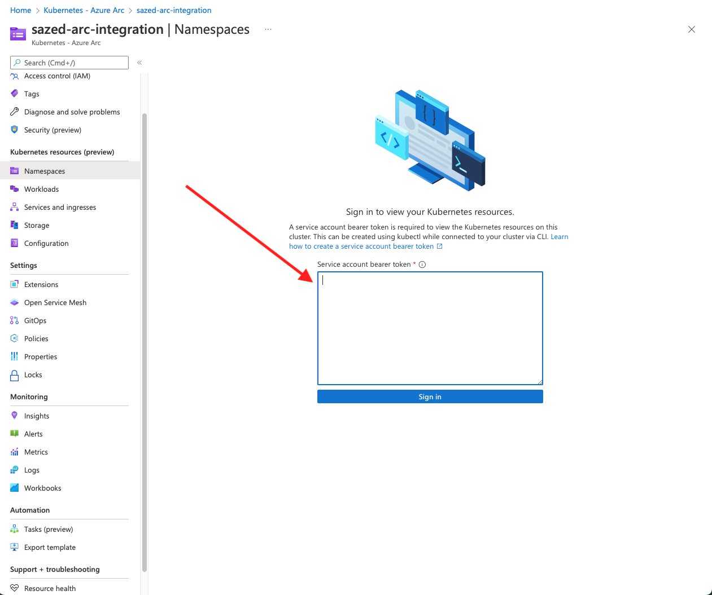
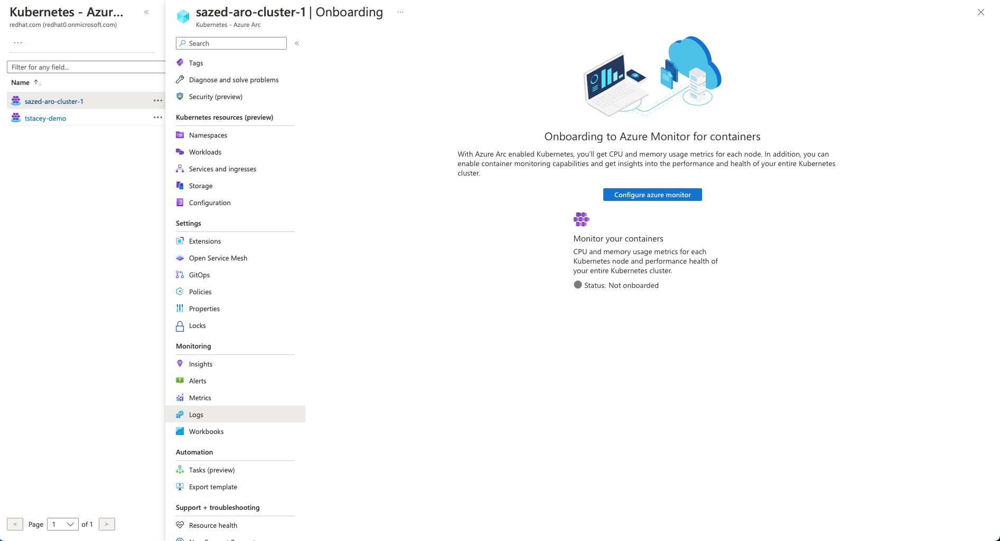
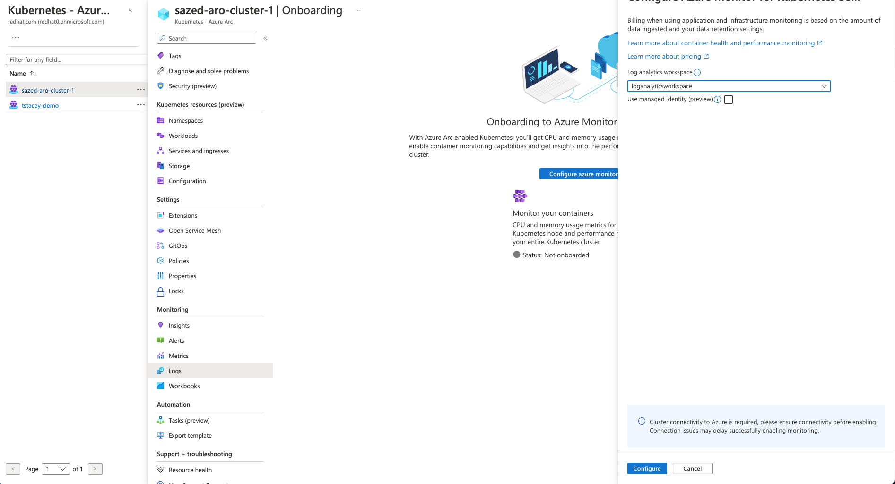
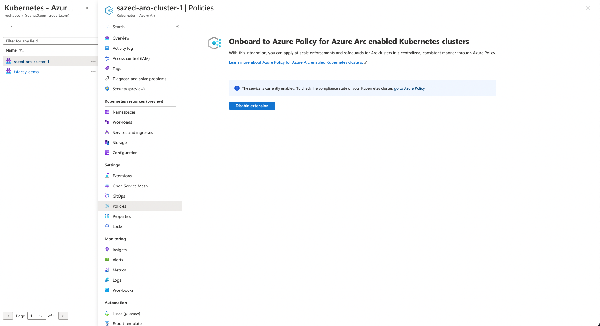
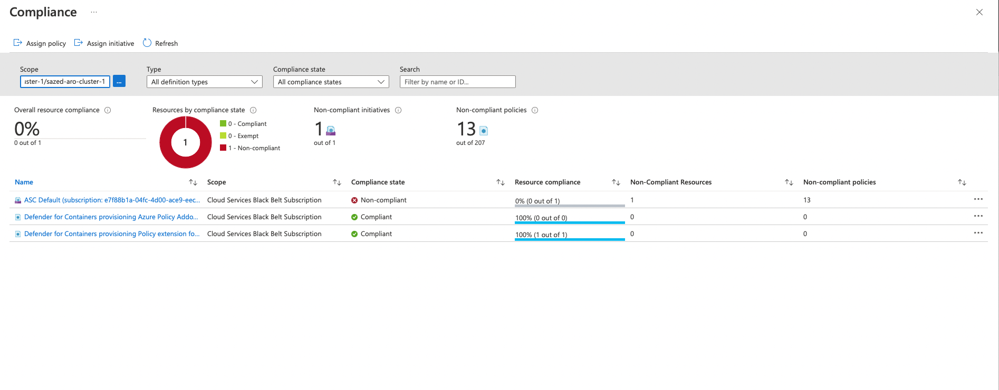

Integrating Azure ARC with ARO#
In this section of the workshop, we will integrate ARO cluster with Azure Arc-enabled Kubernetes. When you connect a Kubernetes/OpenShift cluster with Azure Arc, it will:
- Be represented in Azure Resource Manager with a unique ID
- Be place in an Azure subscription and resource group
- Receive tags just like any otherAzure resource
Azure Arc-enabled Kubernetes supports the following scenarios for connected clusters:
- Connect Kubernetes running outside of Azure for inventory, grouping, and tagging.
- Deploy applications and apply configuration using GitOps-based configuration management.
- View and monitor your clusters using Azure Monitor for containers.
- Enforce threat protection using Microsoft Defender for Kubernetes.
- Apply policy definitions using Azure Policy for Kubernetes.
- Use Azure Active Directory for authentication and authorization checks on your cluster
Prerequisites#
- a public ARO cluster
- azure cli
- oc cli
- An identity (user or service principal) which can be used to log in to Azure CLI and connect your cluster to Azure Arc.
Enable Extensions and Plugins#
Install the connectedk8s Azure Cli extension of version >= 1.2.0
az extension add --name "connectedk8s"
az extension add --name "k8s-configuration"
az extension add --name "k8s-extension"
az provider register --namespace Microsoft.Kubernetes
az provider register --namespace Microsoft.KubernetesConfiguration
az provider register --namespace Microsoft.ExtendedLocation
Connect an existing ARO cluster#
Make sure you are logged into your ARO cluster
kubeadmin_password=$(az aro list-credentials --name <<cluster name>> --resource-group <<resource group name>> --query kubeadminPassword --output tsv)
apiServer=$(az aro show -g <<resource group name>> -n <<cluster name>> --query apiserverProfile.url -o tsv)
oc login $apiServer -u kubeadmin -p $kubeadmin_password
Run the following command:
az connectedk8s connect --resource-group $resourceGroupName --name $clusterName --distribution openshift --infrastructure auto
After running the commnad. grant the following permissions and restart kube-aad-proxy pod
oc project azure-arc
oc adm policy add-scc-to-user privileged system:serviceaccount:azure-arc:azure-arc-kube-aad-proxy-sa
oc get pod | grep
kube-aad-proxy-6d9b66b9cd-g27xr 0/2 ContainerCreating 0 26s
oc delete pod kube-aad-proxy-6d9b66b9cd-g27xr
Wait for a few mins and you will see all the pods in azure-arc namespace running
oc get pods
NAME READY STATUS RESTARTS AGE
cluster-metadata-operator-7dfd94949c-wtvjw 2/2 Running 0 4m47s
clusterconnect-agent-7d78db9859-wzthd 3/3 Running 0 4m47s
clusteridentityoperator-7b96bcb448-hzthh 2/2 Running 0 4m47s
config-agent-dbf66bbc7-r27qs 2/2 Running 0 4m47s
controller-manager-67547546f-cmlb9 2/2 Running 0 4m47s
extension-manager-548c9d7d6b-jrrdn 2/2 Running 0 4m47s
flux-logs-agent-bb994c74f-m5gdc 1/1 Running 0 4m47s
kube-aad-proxy-6d9b66b9cd-g27xr 2/2 Running 0 3m16s
metrics-agent-7d794679c6-k4b7g 2/2 Running 0 4m47s
resource-sync-agent-bb79c44b8-5brjr 2/2 Running 0 4m47s
This commands take about 5 mins to complete. Upon the completion of the command you should see the following output and your cluster under Kubernetes - Azure Arc service in Azure Portal
{
"agentPublicKeyCertificate": "MIICCgKCAgEArNXWSoWVg7q/W5t7vwY24Y8c+dRxy3we/EIRryXx1Orl8GEX94BsHJqvP0iW6ANZ0qoWE675+NR6V3nDMSkis5/aSYMQ8/yWMcUzieKwFfFmTSfCpkzwxy6PSbdRjMwK5H3DDOOXyRQcJV557F5FjHVYfC/0DkPYdhfepcVade+HgOwOOJH28hSNw58pWo/GNNmcwtzFPVdx/TM574CbNVz4OdrtsMy7FKKC63lYW+W3wkzFOqB+qPaITwqwzkruIoSi5HIatONoCPijdTLm3+RoK/CbTYqzHEEId8gFFJd+J4qfSeCYu6jeDNOpwt8DKDLFLvv04oHyxm+Nr34xPBm3+sjggvkLQ5UWpGZ9h7jWTEP2pWEcXF0KqAqAEFPBOOqDKEaYfLtJSJ/yExS1otydDCJEZ1sRPvsjdH5f0DKVXPHgiDa4SoLXomqkarF3g9i6CEK/XE9JTVa8WBJT6wXdXBa0xh8EnzZ9uyVuY1k/2L7d4BR5+sIjqtcDfRSVtxN+LNxgqpo20ltXM1hWkd8WacK7VY+t2lxbYf01zhXWOpaBGgeAMqxqqcHeQor2vzA9PENYYr5zo8eP1LcySmC4LIFiDfN1NxAiZ5SCnrorNFbmrgEDFnWvZzdu2w4r55fsV9qnozUjn6iRqByhyMoeLn5EZLLK5zsW8sA/CeUCAwEAAQ==",
"agentVersion": null,
"connectivityStatus": "Connecting",
"distribution": "OpenShift",
"id": "/subscriptions/e7f88b1a-04fc-4d00-ace9-eec077a5d6af/resourceGroups/sazed-aro-cluster/providers/Microsoft.Kubernetes/connectedClusters/sazed-aro-cluster",
"identity": {
"principalId": "xxxx-xxxx-xxxx-xxxx",
"tenantId": "xxxx-xxxx-xxxx-xxxx",
"type": "SystemAssigned"
},
"infrastructure": "azure",
"kubernetesVersion": null,
"lastConnectivityTime": null,
"location": "eastus",
"managedIdentityCertificateExpirationTime": null,
"name": "sazed-aro-cluster",
"offering": null,
"provisioningState": "Succeeded",
"resourceGroup": "sazed-aro-cluster",
"systemData": {
"createdAt": "2022-09-15T19:23:40.540376+00:00",
"createdBy": "sazed@redhat.com",
"createdByType": "User",
"lastModifiedAt": "2022-09-15T19:23:40.540376+00:00",
"lastModifiedBy": "sazed@redhat.com",
"lastModifiedByType": "User"
},
"tags": {},
"totalCoreCount": null,
"totalNodeCount": null,
"type": "microsoft.kubernetes/connectedclusters"
}
To check the status of clusters connected to Azure ARC, run the following command
az connectedk8s list --resource-group <<resource group>> --output table
Name Location ResourceGroup
------------------- ---------- -------------------
<< cluster name >>> eastus << resource group >>
Enable observability#
In order to see ARO resource inside Azure Arc, you need to create a service account and provide it to Azure Arc.
oc project azure-arc
oc create serviceaccount azure-arc-observability
oc create clusterrolebinding azure-arc-observability-rb --clusterrole cluster-admin --serviceaccount azure-arc:azure-arc-observability
apiVersion: v1
kind: Secret
metadata:
name: azure-arc-observability-secret
namespace: azure-arc
annotations:
kubernetes.io/service-account.name: azure-arc-observability
type: kubernetes.io/service-account-token
TOKEN=$(oc get secret azure-arc-observability-secret -o jsonpath='{$.data.token}' | base64 -d | sed 's/$/\\n/g')
echo $TOKEN
Copy the token, goto Azure portal and select your cluster under "Kubernetes - Azure Arc" Select Namespaces from the left side menu and paste the token in "Service account bearer token" input field.

Now you can see all of your ARO rearouses inside ARC UI. you can see the following resources inside Azure ARC portal: - Namespaces - Workloads - Services and Ingress - Storage - Configurations
Access Secrets from Azure Key Vault#
The Azure Key Vault Provider for Secrets Store CSI Driver allows for the integration of Azure Key Vault as a secrets store with a Kubernetes cluster via a CSI volume. For Azure Arc-enabled Kubernetes clusters, you can install the Azure Key Vault Secrets Provider extension to fetch secrets.
Install extension#
az k8s-extension create --cluster-name <<cluster name>> --resource-group <<resource group>> --cluster-type connectedClusters --extension-type Microsoft.AzureKeyVaultSecretsProvider --name akvsecretsprovider
{
"aksAssignedIdentity": null,
"autoUpgradeMinorVersion": true,
"configurationProtectedSettings": {},
"configurationSettings": {},
"customLocationSettings": null,
"errorInfo": null,
"extensionType": "microsoft.azurekeyvaultsecretsprovider",
"id": "/subscriptions/e7f88b1a-04fc-4d00-ace9-eec077a5d6af/resourceGroups/sazed-aro-cluster/providers/Microsoft.Kubernetes/connectedClusters/sazed-aro-cluster-1/providers/Microsoft.KubernetesConfiguration/extensions/akvsecretsprovider",
"identity": {
"principalId": "xxxx-xxxx-xxxx-xxxx",
"tenantId": null,
"type": "SystemAssigned"
},
"installedVersion": null,
"name": "akvsecretsprovider",
"packageUri": null,
"provisioningState": "Succeeded",
"releaseTrain": "Stable",
"resourceGroup": "sazed-aro-cluster",
"scope": {
"cluster": {
"releaseNamespace": "kube-system"
},
"namespace": null
},
"statuses": [],
"systemData": {
"createdAt": "2022-09-15T20:45:47.152390+00:00",
"createdBy": null,
"createdByType": null,
"lastModifiedAt": "2022-09-15T20:45:47.152390+00:00",
"lastModifiedBy": null,
"lastModifiedByType": null
},
"type": "Microsoft.KubernetesConfiguration/extensions",
"version": "1.3.0"
}
Validate the extension installation
az k8s-extension show --cluster-type connectedClusters --cluster-name <<cluster name>> --resource-group <<resource group>> --name akvsecretsprovider
{
"aksAssignedIdentity": null,
"autoUpgradeMinorVersion": true,
"configurationProtectedSettings": {},
"configurationSettings": {},
"customLocationSettings": null,
"errorInfo": null,
"extensionType": "microsoft.azurekeyvaultsecretsprovider",
"id": "/subscriptions/e7f88b1a-04fc-4d00-ace9-eec077a5d6af/resourceGroups/sazed-aro-cluster-1/providers/Microsoft.Kubernetes/connectedClusters/sazed-aro-cluster-1/providers/Microsoft.KubernetesConfiguration/extensions/akvsecretsprovider",
"identity": {
"principalId": "xxxx-xxxx-xxxx-xxxx",
"tenantId": null,
"type": "SystemAssigned"
},
"installedVersion": null,
"name": "akvsecretsprovider",
"packageUri": null,
"provisioningState": "Succeeded",
"releaseTrain": "Stable",
"resourceGroup": "sazed-aro-cluster",
"scope": {
"cluster": {
"releaseNamespace": "kube-system"
},
"namespace": null
},
"statuses": [],
"systemData": {
"createdAt": "2022-09-15T20:45:47.152390+00:00",
"createdBy": null,
"createdByType": null,
"lastModifiedAt": "2022-09-15T20:45:47.152390+00:00",
"lastModifiedBy": null,
"lastModifiedByType": null
},
"type": "Microsoft.KubernetesConfiguration/extensions",
"version": "1.3.0"
}
Create or Select an Azure Key Vault#
az keyvault create -n <<cluster name>> -g <<resource group>> -l eastus
az keyvault secret set --vault-name <<cluster name>> -n DemoSecret --value MyExampleSecret
Provide identity to access Azure Key Vault#
Currently, the Secrets Store CSI Driver on Arc-enabled clusters can be accessed through a service principal. Follow the steps below to provide an identity that can access your Key Vault.
Use the provided Service Principal credentials provided with the lab and create a secret in ARO cluster
oc create secret generic secrets-store-creds --from-literal clientid="<client-id>" --from-literal clientsecret="<client-secret>"
oc label secret secrets-store-creds secrets-store.csi.k8s.io/used=true
Create a SecretProviderClass with the following YAML, filling in your values for key vault name, tenant ID, and objects to retrieve from your AKV instance
apiVersion: secrets-store.csi.x-k8s.io/v1
kind: SecretProviderClass
metadata:
name: akvprovider-demo
spec:
provider: azure
parameters:
usePodIdentity: "false"
keyvaultName: <key-vault-name>
objects: |
array:
- |
objectName: DemoSecret
objectType: secret
objectVersion: ""
tenantId: <tenant-Id>
Create a pod with the following YAML, filling in the name of your identity
kind: Pod
apiVersion: v1
metadata:
name: secret-store-pod
spec:
containers:
- name: busybox
image: k8s.gcr.io/e2e-test-images/busybox:1.29
command:
- "/bin/sleep"
- "10000"
volumeMounts:
- name: secrets-store-inline
mountPath: "/mnt/secrets-store"
readOnly: true
volumes:
- name: secrets-store-inline
csi:
driver: secrets-store.csi.k8s.io
readOnly: true
volumeAttributes:
secretProviderClass: "akvprovider-demo"
nodePublishSecretRef:
name: secrets-store-creds
Validate the secrets#
After the pod starts, the mounted content at the volume path specified in your deployment YAML is available.
## show secrets held in secrets-store
oc exec secret-store-pod -- ls /mnt/secrets-store/
DemoSecret
## print a test secret 'DemoSecret' held in secrets-store
oc exec secret-store-pod -- cat /mnt/secrets-store/DemoSecret
MyExampleSecret
Enable log aggregation#
In order to collect logs from ARO cluster and store it in Azure ARC. configure azure monitor
Create Azure Log Analytics Workspace
az monitor log-analytics workspace create --resource-group <<same as above>> --workspace-name loganalyticsworkspace
logs

Click on configure azure monitor button and select the workspace created in last step and click on configure.

Now you can go see logs and metrics for your cluster.
Monitor ARO cluster against Goverance Policies#
Azure Policy extends Gatekeeper v3, an admission controller webhook for Open Policy Agent (OPA), to apply at-scale enforcements and safeguards on your clusters in a centralized, consistent manner. Azure Policy makes it possible to manage and report on the compliance state of your Kubernetes clusters from one place. The add-on enacts the following functions: - Checks with Azure Policy service for policy assignments to the cluster. - Deploys policy definitions into the cluster as constraint template and constraint custom resources. - Reports auditing and compliance details back to Azure Policy service.
Azure policy plugin is enabled when you connect your ARO cluster with Azure ARC. 
you can click on go to Azure Policies to look at the policies assigned to your cluster, check their status and attach more policies.
